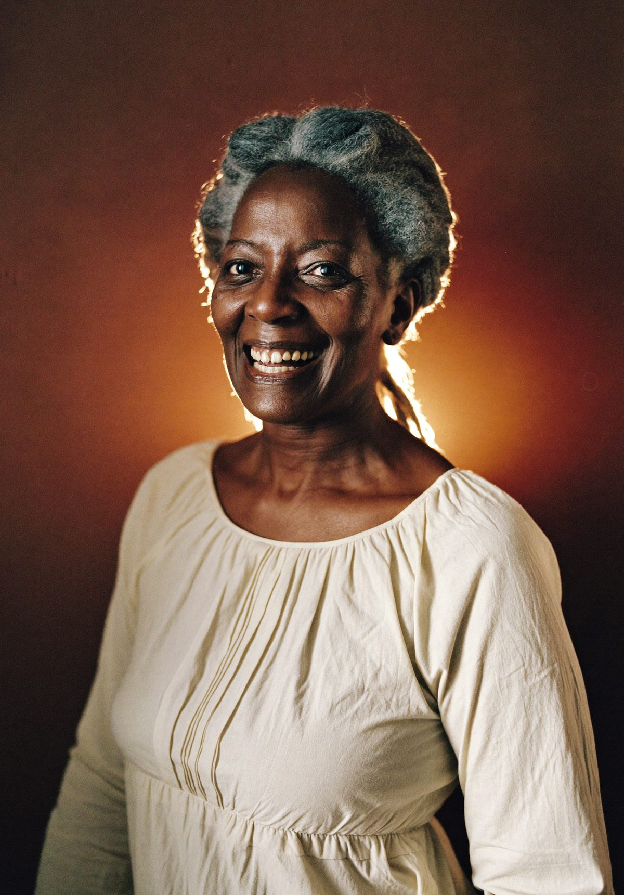
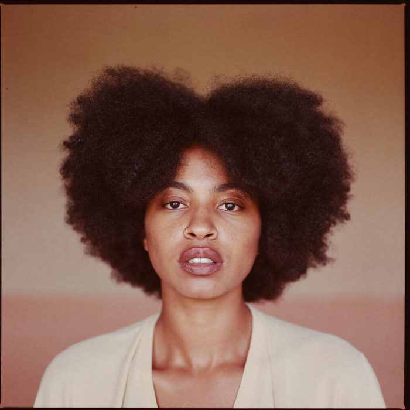

A woman should not have to do this alone.
SHUMI is where she doesn't. A place for women to gather, grow and be heard — built by women of the Cape Verdean community, open to every woman who wants in.
 Brockton, Massachusetts
Brockton, Massachusetts
Three ways in. Pick the one that fits this week.
Come on 11 October
A whole Sunday together — talking, eating, listening, and meeting women you have not met yet. Tickets from $25, doors 1pm.
Get tickets on Eventbrite Give a few hoursVolunteer
Help on the day, welcome people at the door, or give a few hours a month to a sister circle.
Volunteer with SHUMI For organisationsPartner with us
For businesses and organisations who want to work with us, host a session, or support a gathering.
Talk to usThe women you would be walking in to meet.
Three generations, and nobody arrives knowing everyone.




Coming for the first time, step by step.
You book, and a person says hello
A ticket, then an email from a woman — not a system — telling you what to expect and who to look for.
Takes two minutes.
You arrive, and you are walked in
Someone meets you at the door and introduces you to three women before you have taken your coat off.
Nobody stands alone.
You leave with somewhere to go next
A sister circle, a session, or the next Sunday. Whatever you want, and nothing you don't.
No pressure, ever.
Ten seconds of what the room is like.
September's gatheringArt direction — real footage replaces this before launch.
Three programmes, run properly.

Sister circles
Twelve women, once a month, no agenda — and what is said there stays there. It is the programme women ask us for by name, and the one that keeps them coming back.
Gatherings
Sunday events a few times a year, with someone whose job is to introduce you to three people.
Sister circles
Small groups that meet monthly, in living rooms and back halls across Brockton.
Learning
Practical sessions on money, health, work and papers — led by women from the community.